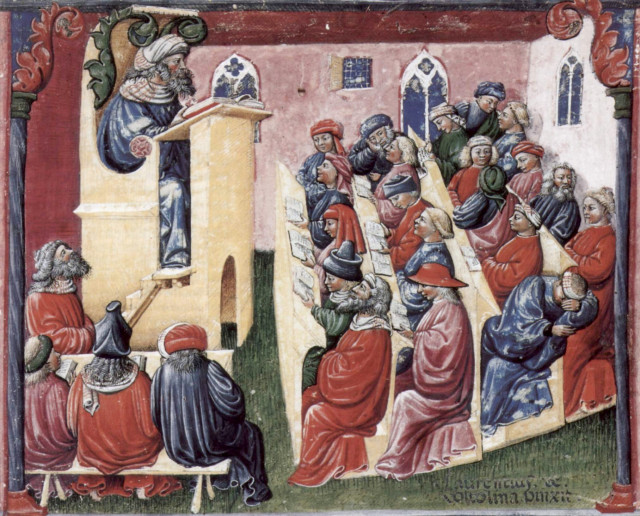

Некоторые черты эпохи
Мы уже писали, что первая достоверная письменная информация о размерах галер появилась в XIV веке. В предыдущем тексте говорилось о том, какой хаос царил в эпоху средневековья в метрологии. А XIV век выделялся даже на этом фоне. Вот что пишет Розенбергер в своей «Истории физики» об этом периоде:
«Ни одно столетие в научном отношении не представляло столь жалкого и прискорбного зрелища, как четырнадцатый век. В XIII в. можно было надеяться на близкое пробуждение умов. Науки древних были перенесены на запад, университеты возникали один за другим, были сделаны крупные научные открытия, и метод опытного исследования был противопоставлен схоластическим истолковательным приемам. Несмотря, однако, на все это, в ближайшем произошло не движение вперед, а наступил полный паралич умственной деятельности. Безотрадную пустыню этого столетия не оживляет ни одно открытие, ни одна светлая личность, выдающаяся своей ученостью. Физика, астрономия, математика, химия, мало того, самая алхимия погружены в летаргический сон. Лишь схоластики невозбранно пожинают лавры на своих диспутах о возможных и невозможных вещах; и они же под защитой и покровительством церкви объясняют строение вселенной.»
 |
Laurentius de Voltolina Школа. XIV век |
Схоластика не успела познакомиться со всеми классическими учеными и, остановившись приблизительно на Аристотеле, даже его не знала в оригинальной форме.
«Схоластикам недоставало знания греческого языка. Их знакомство с греческой наукой произошло через посредство латинских переводов, которые, в свою очередь, не были сделаны с подлинников. Сочинения Аверроэса, служившие схоластикам основанием для изучения Аристотеля, были, по замечанию Льюиса, латинским переводом с еврейского перевода одного арабского комментария к арабскому же переводу с сирийского; только последний перевод был уже сделан прямо с греческого подлинника. (выделено мной – g_g). Петрарка (1304—1374) жалуется, что в Италии не насчитывается боле 10 человек, способных ценить Гомера, а Боккачио (1313—1375) с большим трудом находит кафедру греческого языка во Флоренции для Леонтия Пилата; да и то не надолго, так как греческий ученый «в философском плаще и с всклоченной бородой» вскоре покидает Италию, исполненный глубокого отвращения. Зато после взятия Константинополя ученые, бежавшие оттуда, очень скоро распространили знание греческого языка, а расцветающий гуманизм не только подготовил падение схоластики, на которую он взирал с презрением, но и косвенным образом повлиял на развитие естественных наук, открыв мысли большую свободу вообще и расширив круг знакомства с греческой наукой о природе.»
Мы обязательно в будущем поговорим о роли греков этой эпохи в галеростроении.